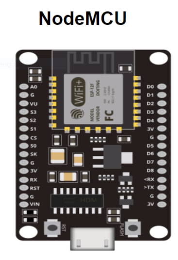
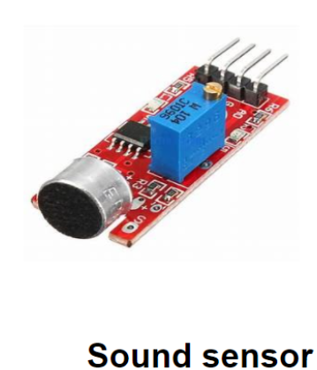
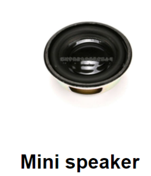
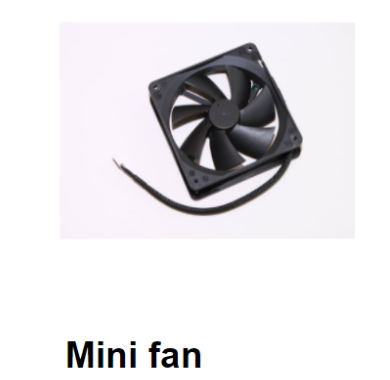
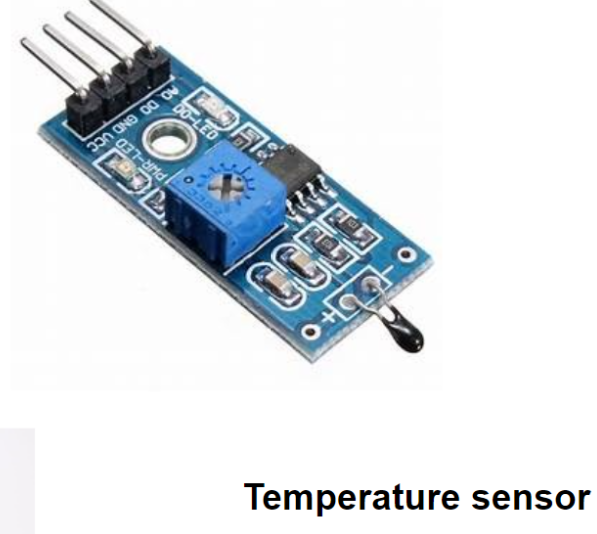

Smart Cradle
Problem
As we are very well familiar with the hurdles faced by Parents to nurture their infant and especially in case if both the Parents are working. To give 24 hours of time in such cases is next to impossible. However they still need to look after their babies,thereby increasing workload and stress. They either send their babies to their parents or hire a baby caregiver while they are working. Some parents worry about the safety of their babies in the care of others.Thus they go home to check on their babies during their free time, such as lunch or tea break.

A baby Monitoring System that can monitor the babies' condition real time is proposed to solve these problems. A baby monitoring System consisting of a vedio camera and microphone without limitations of coverage.It can send data and immediately notify the parents about urgent situations,thereby shortening the time needed to handle such scenarios.
Solution
The proposed solution involves live monitoring of the child through a mobile application remotely.Noice Sensor for the detection of the child's crying activity.When detect crying, cradle send a message to parent,plays a song.The Thermal sensor notifies the parent about the envioremental temperature near the baby and switch on the fan automatically with temperature. The proposed system uses the cloud service for remotely monitoring the child.
Solution Architecture

There is a cry detection mechanism which detects cry of the baby and send instant mobile app notifications to the user, at the same time some music will be played to soothe the baby.User can use play music option using their mobile application according to their wish at any occation even if a cry is not detected in order to soothe the baby.
Using the temperature sensors, room temperature is delected and if it exceed 30 celcius ,mini fan will be turned on automatically.Turn on and off functions of the mini fan can be fully controled using the mobile application also according to the need of the user.Swing of the cradle is fully controlled by the Mobile application.
Central server(AWS ) is used to maintain a database to keep a track of registrations and logins.Whenever the user log in to the system, mobile application will conect to the server and verify authentications.
Hardware Control Flow

Software Control Flow

ER Diagram

EER Diagram

Software Design
Mobile application is designed in a more user friendly manner.Graphics and picture are used to repesent the functionalites/options of the smart cradle.This will clearly deliver the content to the user and they can easily navigate to their requirements without much frustration.
Basic functionaites of the mobile application:
Monitor the baby
Swing the Cradle
Check the room temperature
Play Music
Switch on the Fan
Get Notifications
User have to first register giving their basic information,thereafter whenever they use the application, they can login giving their user name and the passward.This will assure our users that their information is protected and secure. Since real time visual monitoring of the baby option is available in the mobile application, assuring the privacy of the users as well as thier babies is more important. Because of high protection over the all the user information and the passwords,users can be make user that no unauthorized person can see their baby and no third party people can access the control of the smart cradle
UI Design


Progress Video of the UI (To be updated....)
Hardware Components

Components need to swing the cradle |

Reasons to choose NodeMCU |

This sensor is used to detect cry |
| 
Mini speaker is used to play songs |

This is used to monitor the baby |
 |
| 
This sensor is used to measure the environment temperature |
Security and Safety

|

|

|
When we consider about a product like cradle ,security and safety is the most important thing.Security features of this product
are achieved by using the above technologies.
AWS : This is the cloud based serever that we use.We have choosen it ,because it provides secure services.
It uses certificates to authenticate machine to machine communication and provides policies to control the
actions of the devices.
Amazon RDS : We create our own database server in cloud, and amzon RDS is the storage service that we use.We have choosen it because
it supports MySQL and it is secure.It uses data encryption to secure data.The data stored in the disk is encrypted.
The data which is transmited via the network is also encrypted.
OTP : TThis is used to verify the user logins . An OTP will be sent via AWS SNS service.
Budget

Timeline


Contact Us
University of Peradeniya.
Phone: +94 81 239 33 00 |
Faculty of Engineering.
Phone: +94 81 239 33 02 |

Computer Engineering Department.
Phone: +94 81 239 39 14 |